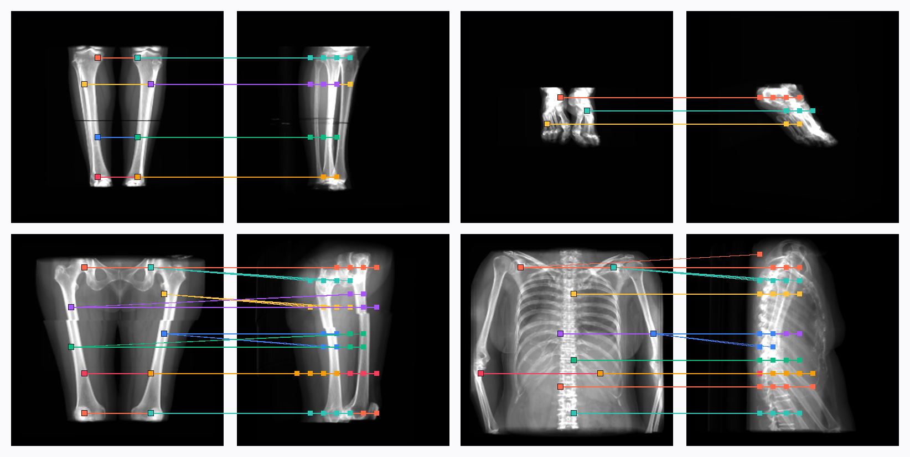
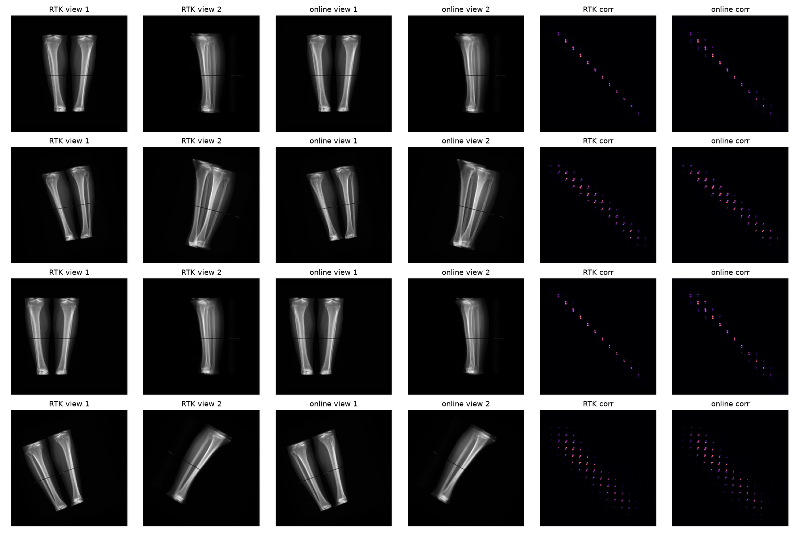

Self-Supervised Multiview X-ray Matching
Many-to-many correspondences between X-ray views, learned without a single manual annotation from CT-rendered radiographs.
1LTCI, Télécom Paris, Institut Polytechnique de Paris, France · 2Milvue, Paris, France
MICCAI 2025 · Daejeon · LNCS 15960
One patch, many matches. A patch in a fixed radiograph (left, red) corresponds to the whole set of patches in a second view that see the same voxels along the X-ray path (middle). As the second camera orbits, the correspondence turns from a blob into a band and back. Right: the full 256 × 256 patch-correspondence matrix, computed analytically from the CT geometry, with the query row highlighted. Rendered from a public pelvis CT with the on-the-fly pipeline of the code repository; the query patch changes every third of the orbit.
Overview
- Problem. Radiologists reason across several views, but multi-view X-ray datasets with annotated correspondences hardly exist, and natural-image matchers assume one-to-one matches. X-rays are projections: a point in one view corresponds to a line of points in another.
- Idea. Render pairs of digitally reconstructed radiographs (DRRs) from unannotated CT volumes and derive the exact many-to-many patch correspondence matrix from the projection geometry: project each voxel onto both views, take the outer product, and keep the maximum over voxels.
- Model. A ResNet-50 + transformer (rotary positional encoding) predicts the correspondence matrix as a normalised dot product between patch embeddings of the two views, trained with MSE on 207,600 synthetic pairs.
- Pay-off. Fine-tuned with three annotated matches per image pair, the model reaches 83.8 AP on real radiographs (zero-shot LoFTR: 9.4; frozen DINOv2-G + MLP: 42.2). Used as pretraining and as an attention bias, correspondences improve multi-view fracture classification on MURA from 75.8 to 80.6 % accuracy.
¶Why matching X-rays is many-to-many
In a photograph a pixel sees one surface point, so matching is one-to-one up to occlusion. A radiograph integrates attenuation along the whole ray. Everything on the ray between source and detector pixel is projected, from different directions, onto a segment of the other view. The right unit of supervision is therefore not a point pair but a soft correspondence matrix between the patches of the two images.
Natural images: one-to-one
A surface point projects to one pixel in each camera. Matchers such as SuperGlue or LoFTR are built around this assumption.
Radiographs: many-to-many
The chord of the patient seen by one pixel of view 1 is spread over a band of pixels of view 2, and vice-versa: supervision has to be a matrix, not a point list.
Method
Three steps: (1) generate correspondence ground truth from CT geometry, (2) learn to predict it from the two images, (3) reuse the learned correspondence as pretraining and as an attention bias for a downstream multi-view classifier.
1Correspondence ground truth from CT volumes
Let \(V\) be a CT volume and \(v\) one of its non-air voxels. Projecting \(v\) alone onto the two detectors (Joseph ray-casting in the original pipeline, perspective projection of the voxel footprint in the on-the-fly variant) gives two projection images \(P_1^v, P_2^v\). Flattened, their outer product says which pixel of view 1 and which pixel of view 2 both see \(v\); the maximum over voxels aggregates all of them:
Because fractures and lesions span regions rather than pixels, and to keep the matrix tractable for a 256³ volume, the volume is pooled by a factor \(k = 16\) and correspondences are computed between 16 × 16 patches, i.e. a 256 × 256 matrix per pair of 256 × 256 views. Soft values in \([0,1]\) weight each voxel by its (sigmoid-transformed) attenuation, so bone dominates and air vanishes.
2Predicting the correspondence matrix
A pretrained backbone \(f\) (ResNet-50 up to its third stage) turns each 256 × 256 view into a 16 × 16 grid of features, projected to 512 dimensions and flattened into 256 patch tokens. The tokens of both views are concatenated into one sequence and processed by a transformer (8 layers, 8 heads, rotary positional encoding): self-attention over the joint sequence performs intra- and inter-view communication at once. The predicted matrix is the squared cosine similarity between the refined tokens of the two views, trained with a mean-squared error against the soft ground truth. The formulation extends to more than two views without modification.
3Pretraining and attention guidance for multi-view classification
Predicting correspondences is a self-supervised pretext task: the model must encode shared anatomy across views. All modules of the downstream multi-view fracture classifier (a ViT-S with 6 layers, 4 heads, width 384, early fusion of the two views) are therefore initialised from the correspondence model.
The predicted matrix is also injected into the classifier. With the \(N\) tokens of view A and view B concatenated, every attention map splits into four \(N\times N\) blocks. The correspondence \(C\) is added as a soft bias to the cross-view blocks before the softmax, with one learnable scale \(\alpha\) per layer:
The bias is architecture-agnostic: any attention layer that sees tokens of several views can take it.
Results
1Correspondence prediction on synthetic pairs
16,920 DRR pairs rendered from 42 extremity CT volumes never seen during training. All models use a ResNet-50 backbone and the same normalised-dot-product head; only the inter-patch communication module changes. Precision and recall are computed at a 0.2 threshold.
| Attention module | Message passing | MSE ↓ | Precision ↑ | Recall ↑ | AP ↑ |
|---|---|---|---|---|---|
| None (CNN only) | – | 2.25 × 10⁻³ | 49.1 | 68.0 | 54.7 |
| SuperGlue module | ✓ | 1.33 × 10⁻³ | 70.3 | 75.6 | 80.1 |
| LoFTR module | ✓ | 1.24 × 10⁻³ | 74.2 | 78.1 | 83.5 |
| Standard transformer | ✓ | 1.19 × 10⁻³ | 75.5 | 79.4 | 84.1 |
| Standard transformer (ours) | – | 1.09 × 10⁻³ | 77.0 | 81.5 | 85.0 |
Table 1. The unconstrained transformer beats the graph-based message-passing heads; removing message passing helps further. Attention matters: the CNN-only baseline loses 30 AP points.
2Correspondence prediction on real radiographs
347 real two-view studies, each with only three annotated positive correspondences and 100 negatives, split 60/10/30. LoFTR* is LoFTR with a normalised-dot-product, thresholded head for many-to-many matching.
| Setting | Backbone | Model | Precision ↑ | Recall ↑ | AP ↑ |
|---|---|---|---|---|---|
| Zero-shot | |||||
| ResNet-50 | LoFTR module | 32.5 | 2.7 | 9.4 | |
| ResNet-50 | LoFTR* module | 28.3 | 26.3 | 15.9 | |
| DINOv2-G (1.1 B) | – | 3.0 | 15.2 | 1.7 | |
| Fine-tuning on the 60 % split | |||||
| ResNet-50 | LoFTR* module | 36.8 | 18.0 | 16.1 | |
| DINOv2-G (frozen) | MLP head | 55.2 | 51.6 | 42.2 | |
| DRR pretraining + fine-tuning | |||||
| Ours | ResNet-50 | Standard transformer (24 M) | 72.3 | 87.1 | 83.8 |
Table 2. Synthetic pretraining closes the domain gap that one-to-one matchers cannot: with the same sparse annotations, a 24 M-parameter model pretrained on DRR correspondences doubles the AP of a 1.1 B-parameter frozen DINOv2-G.
3Multi-view fracture classification
A ViT-S classifier trained on MURA (elbow, forearm, hand, wrist; 5,511 studies) and on a private dataset (hand, forearm, foot, knee; 5,653 studies), two views per study, binary cross-entropy. Early fusion concatenates the patch tokens of both views before the transformer; late fusion averages per-view scores. All models start from ImageNet weights; "pretraining" additionally initialises from the correspondence model, "guidance" adds the attention bias.
Full Table 3 (mean ± std over runs)
| Dataset | Pretraining | Guidance | Fusion | Accuracy | Precision | Recall | κ |
|---|---|---|---|---|---|---|---|
| MURA | – | – | Single view | 73.3±0.3 | 75.4±0.2 | 65.4±0.2 | 0.45 |
| – | – | Late | 78.7±0.2 | 83.3±0.1 | 67.4±0.2 | 0.56 | |
| – | – | Early | 75.8±0.2 | 78.5±0.1 | 65.4±0.2 | 0.49 | |
| ✓ | – | Early | 80.1±0.1 | 83.4±0.1 | 73.6±0.2 | 0.58 | |
| ✓ | ✓ | Early | 80.6±0.1 | 84.8±0.1 | 74.4±0.2 | 0.59 | |
| Private | – | – | Single view | 68.8±0.2 | 53.6±0.2 | 41.7±0.2 | 0.30 |
| – | – | Late | 74.2±0.2 | 59.5±0.2 | 50.1±0.2 | 0.36 | |
| – | – | Early | 71.1±0.1 | 54.4±0.1 | 44.2±0.1 | 0.32 | |
| ✓ | – | Early | 75.0±0.1 | 59.7±0.1 | 49.2±0.2 | 0.37 | |
| ✓ | ✓ | Early | 76.2±0.1 | 59.9±0.1 | 52.6±0.2 | 0.39 |
Table 3. Two views beat one; with correspondence pretraining, early fusion overtakes late fusion (MURA 75.8 → 80.1 %); the attention bias adds a further gain (80.6 % public, 76.2 % private). Pretraining helps even though every model already starts from ImageNet weights.
Data
| Dataset | Role | Size | Supervision |
|---|---|---|---|
| Simulated train | correspondence pretraining | 207,600 pairs · 175 CT | dense soft matrix, automatic (angles, source distance and crops varied) |
| Simulated test | Table 1 | 16,920 pairs · 42 extremity CT | dense soft matrix, automatic; CTs unseen in training |
| Real correspondence | Table 2 (60/10/30 split) | 347 two-view studies | 3 positive + 100 negative patch pairs per study |
| MURA (public) | Table 3 | 5,511 studies · 2 views | study-level abnormality label (elbow, forearm, hand, wrist) |
| Private | Table 3 | 5,653 studies · 2 views | study-level fracture label (hand, forearm, foot, knee) |
Implementation. 256 × 256 inputs, ResNet-50 backbone, transformer with RoPE, Adam with cosine annealing, learning rate 10⁻⁴ for synthetic pretraining and 10⁻⁵ for fine-tuning on real data, batch size 16, MSE for correspondence and BCE for classification. Radiometric augmentation (brightness, contrast, inversion); correspondence-preserving geometric augmentations (rotations, flips, masked crops, cut-outs, shifts) transform the two views and the matrix jointly.

Code
The repository contains the DRR + correspondence generator, the correspondence-preserving augmentations, the matcher, and the training script. Two ways to run it:
Offline (paper).
create_csv.py samples acquisitions per CT, generate_data.py renders the views with ITK-RTK and builds each matrix from 4,096 single-voxel projections, everything lands in data.h5, and main.py trains on it.End-to-end, on the fly.
main_online.py keeps only the CT cubes: for every batch it draws new poses, renders the views on the GPU with DiffDRR (the renderer behind xvr), and derives the correspondence matrix analytically from the same camera geometry. No dataset is written, poses never repeat.Same supervision. The analytic matrix reproduces the per-voxel ray-casting definition of the paper (projected voxel footprints → outer product → max over voxels); the two pipelines are compared numerically in
scripts/online/validate_online.py.
# offline, as in the paper
python src/data/create_csv.py && python src/data/generate_data.py # -> dataset/data.h5
python main.py --config configs/config.yml
# end-to-end: CT volumes in, trained matcher out
python main_online.py --config configs/config_online.yml # data.ct_dir, data.cache_dirCheckpoints, configuration files and the correspondence-preserving augmentations (rotations, flips, masked crops, cut-outs and shifts applied jointly to the two views and to the matrix) are documented in the repository README.
BibTeX
@inproceedings{dabboussi2025multiview,
author = {Dabboussi, Mohamad and Huard, Malo and Gousseau, Yann and Gori, Pietro},
title = {Self-Supervised Multiview Xray Matching},
booktitle = {Medical Image Computing and Computer Assisted Intervention -- MICCAI 2025},
series = {Lecture Notes in Computer Science},
volume = {15960},
pages = {578--588},
publisher = {Springer Nature Switzerland},
year = {2025},
doi = {10.1007/978-3-032-04927-8_55}
}